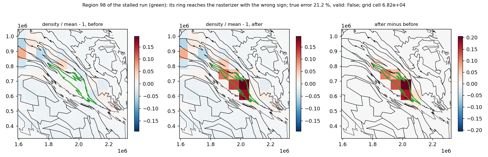
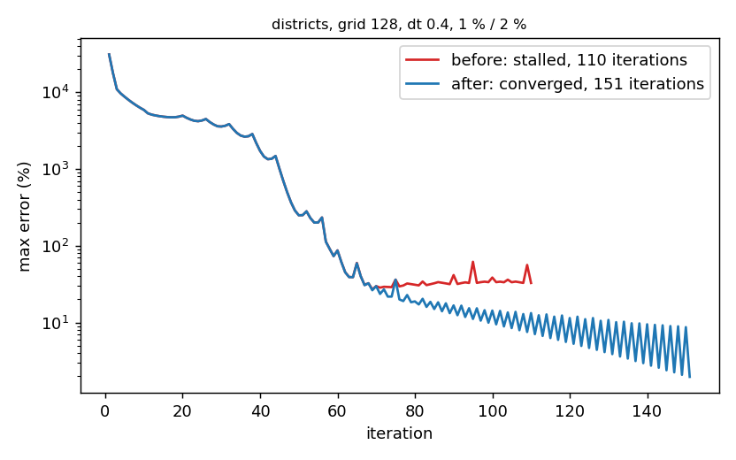

A region whose ring has a small self-intersection could reach the exact rasterizer with the wrong sign and vanish from the density field; orienting rings by their shoelace area keeps it, and a stalled districts run converges.
make_figures.py regenerates the figures and data/tables.md; timing.py is run in a checkout of main and one of the branch. The "before" runs of make_figures.py patch the previous orientation back in, so one checkout gives both columns.
The exact rasterizer integrates the signed area that the edges of each ring sweep across the cells and clips the result to [0, 1]. It needs every exterior ring counter-clockwise (positive signed area). It used shapely.orient_polygons, whose orientation test (GEOS isCCW) looks at the highest vertex of the ring. For a ring with a small self-intersecting loop at that vertex, the test and the signed area can disagree: the ring stays clockwise, every cell of the region gets a negative coverage, the clip sets it to zero, and the cells get the mean density. The region is missing from the field and receives no force from its own area error. Its area, measured by the shoelace formula, is correct, so the error metrics do not show the cause.
In the investigation of the adaptive step control one region of the districts (grid 128) stayed at +10 % after every other region was within 1 %; repairing only that polygon (an area change of 0.00 %) let it converge, and the field around it differed by up to 4 % of the mean density in 18 cells. The center rasterizer, which does not depend on ring orientation, converged from the same state without a repair. Details: adaptive-step-control.
The ring of a region of the stalled districts run is shown below: in the cells it covers, the field before the fix shows no contrast, after the fix it shows the region's density.
Rings are no longer reoriented before the kernel. Inside the numba function that accumulates the coverage, the shoelace sign of each ring is computed and the ring is counted with sign +1 or -1 so that exteriors are positive and holes negative. Valid input gives the same coverage as before (the existing tests against shapely clipping pass unchanged), and a ring with a small loop keeps the sign of its body. Cells that only a loop covers get a small negative sum and are clipped to zero, as before.
| case | before: status, iterations, true max error | after: status, iterations, true max error |
|---|---|---|
| districts, grid 128, dt 0.4, 1 % / 2 % | stalled, 110, 26.41 % | converged, 151, 1.95 % |
| districts, grid 128, dt 0.2, 1 % / 2 % | converged, 135, 1.58 % | converged, 135, 1.58 % |
| districts, grid 256, tolerances 0.5 % / 1 % | converged, 156, 0.73 % | converged, 156, 0.73 % |
| districts, grid 256, default tolerances | converged, 145, 9.76 % | converged, 145, 9.76 % |
| states, grid 256, default tolerances | converged, 112, 0.78 % | converged, 112, 0.78 % |
Stalled run (before): 22 of 432 regions are invalid; the rings of regions [23, 98] reach the rasterizer with a sign opposite to their shoelace area (true errors 3.9 %, 21.2 %). The worst region is 41 (error 26.4 %); the wrong-sign regions are not among its six nearest neighbors. The worst region is therefore not one of the wrong-sign regions: the missing regions change the field around them and the error shows elsewhere. The two fields differ in 31 cells; the summed density deviation (cells) there is -0.068 before and +0.564 after.
Runs without invalid regions and runs where the invalid regions have the right sign give the same iterations and errors before and after (the four other rows).
Median time of one exact density field (ms), main against the branch:
| input, grid | main | branch |
|---|---|---|
| states, 256 | 2.2 | 1.8 |
| districts, 256 | 6.3 | 5.0 |
| districts, 1024 | 20.0 | 18.0 |
The call to orient_polygons is gone and the sign is found inside the compiled loop.
center rasterizer is not affected.
Region 98 of a stalled districts run (grid 128, dt 0.4, 1 % / 2 %; green outline; true error 21.2 %). Left: density relative to the mean with the previous orientation (the region is missing from the field). Middle: with the fix. Right: difference.

Max error per iteration, districts, grid 128, dt 0.4, 1 % / 2 %. Before the fix the run stalls at 110 iterations with a maximum error of 26 %; after it converges at 151 iterations.